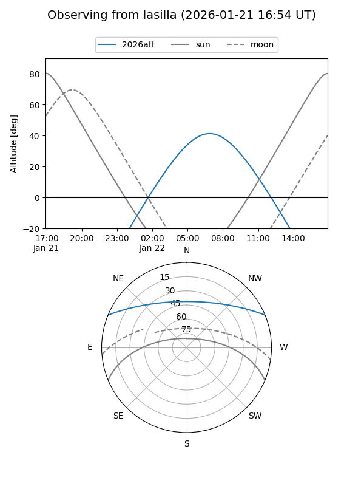
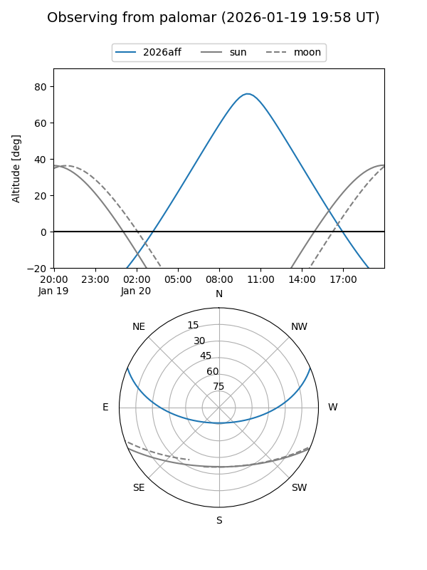
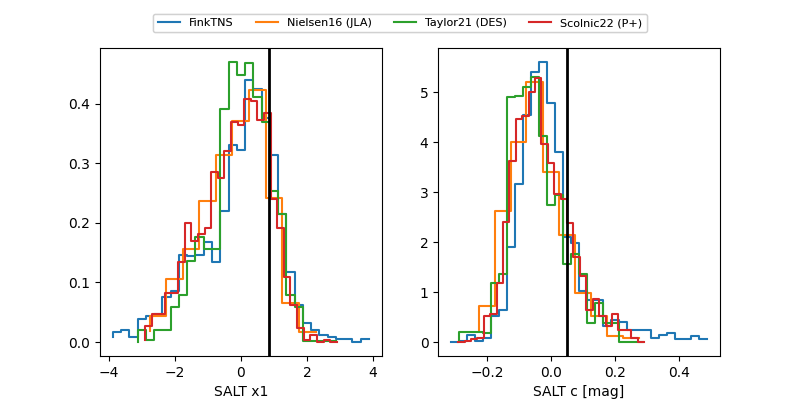

2026aff
Target 2026aff at 2026-01-21 04:06
Aliases and brokers:
FINK: link
Lasair: link
ALeRCE: link
TNS: link
YSE: link
alt names
ZTF26aabivsv (ztf,fink_ztf)
2026aff (tns,yse)
ATLAS26arx (atlas)
Coordinates:
equatorial (ra, dec) = 153.5925,+19.52259
equatorial (HMS+DMS) = 10:14:22.21,+19:31:21.33
galactic (l, b) = (216.3198,+53.30242)
Flags:
Photometry:
last ztfg=19.38, ztfr=19.39
2 ztfg, 2 ztfr detections
Lightcurve

Visibility


Additional plots
